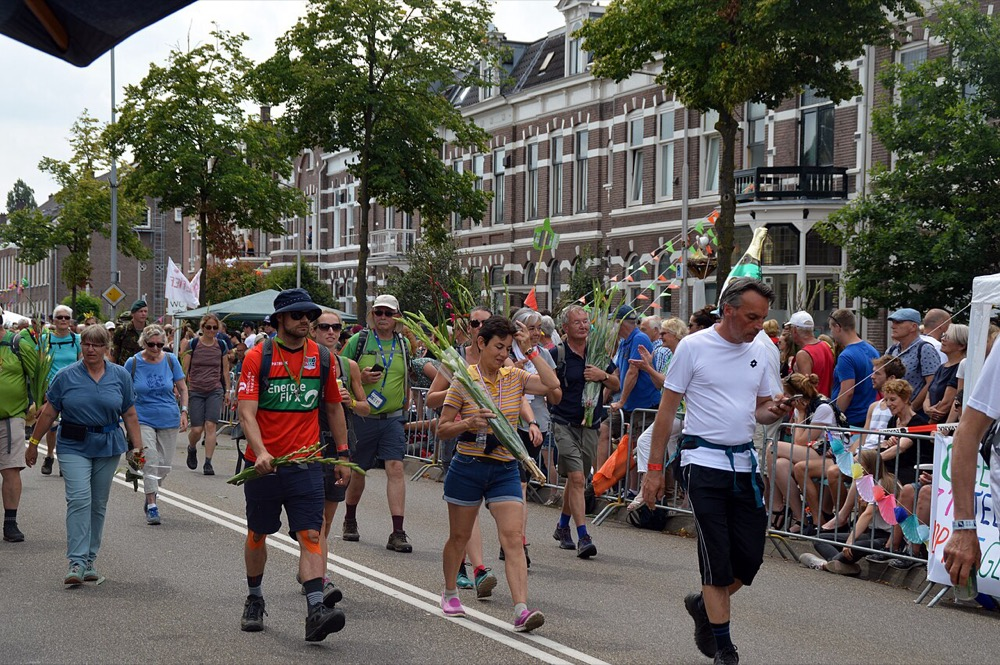
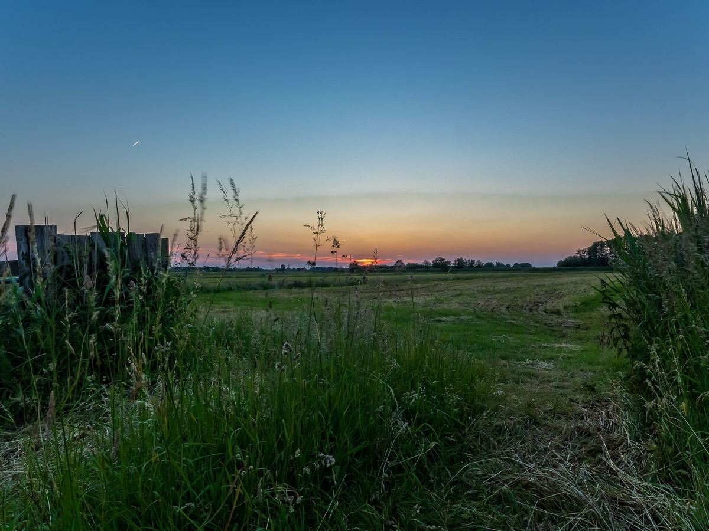
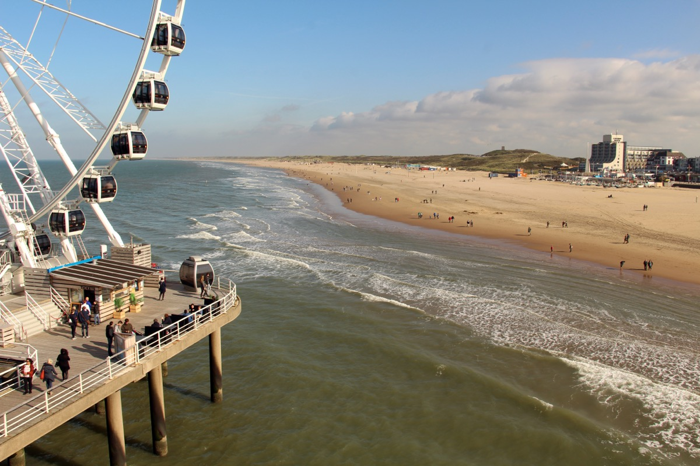

Every letter Tulp has sent on the way to the move, newest first. Pour a coffee and catch up on any you missed.
.jpg?width=500)
Issue #7 · Tuesday, 25 August 2026
The last checkered flag falls in the dunes
The final Dutch Grand Prix goes off in a sea of orange at Zandvoort, ASML gets squeezed between Washington and Beijing, a lawyer's invisible court case costs real money, Schiphol strikes fifteen minutes at a time, and a very direct four hundred year old drinker.
Read this edition →
Issue #6 · Tuesday, 18 August 2026
The summer finally breaks
The hottest day of the year gives way to thunder and rain, a quiet monument in the Scheveningse Bosjes marks 81 years since Japan's surrender, judges throw out a wave of speeding fines, doctors let AI listen in, and a very patient four hundred year old bull.
Read this edition →
Issue #5 · Tuesday, 11 August 2026
An almost total eclipse, right over your heads
The moon takes a nearly total bite out of the sun over the Netherlands, the whole country is back in its football seat, a driverless bus starts at the Efteling, little fried fish from the sea, and Vermeer's quiet milkmaid.
Read this edition →
Issue #4 · Tuesday, 21 July 2026
The whole country goes for a walk
Forty-seven thousand people walking for four days straight, little pancakes from the funfair, Ruisdael's enormous painted sky, and a real-estate look at the neighbourhood by the central station that Jan and Bill keep coming back to.
Read this edition →
Issue #3 · Wednesday, 1 July 2026
The orange dream ends, and fries from a wall
A World Cup heartbreak on penalties, dinner pulled straight out of a wall, Rembrandt's most misunderstood painting, and the summer the whole country slips away.
Read this edition →
Issue #2 · Wednesday, 24 June 2026
Keti Koti, and a floor of peanut butter
The day the country remembers the end of slavery, a Surinamese feast to cook, a Rembrandt with a secret, and a panorama you can stand inside.
Read this edition →
Issue #1 · Wednesday, 17 June 2026
Orange fever and the new herring
The whole country goes orange for the football, the herring boats come home for Vlaggetjesdag, and your first words of Dutch.
Read this edition →